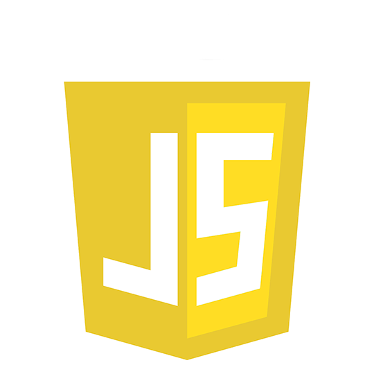

HTML
CSS
JAVASCRIPT

PHP

JAVA

C#

Bienvenue sur mon portfolio !
Cliquez ici si vous êtes un recruteur pour un stageEn recherche Stage 2 ème année BTS SIO Montereau-fault-yonne Dès que possible
Stage 1 ère année BTS SIO Montereau-fault-yonne Mai-Juin 2024
Stage d'observation 3ème Montereau-fault-yonne Mai-Juin 2024
L’option Solution d’infrastructure, systèmes et réseaux forme des professionnels des réseaux et équipements informatiques (installation, maintenance, sécurité). En sortant d’un BTS SIO SISR, vous serez capables de gérer et d’administrer le réseau d’une société et d’assurer sa sécurité et sa maintenance. Les techniciens supérieurs en informatique option SISR, peuvent accéder aux métiers de : Administrateur systèmes et réseaux Informaticien support et déploiement Pilote d’exploitation Support systèmes et réseaux Technicien d’infrastructure Technicien de production Technicien micro et réseaux
En savoir plusL’option Solutions logicielles et applications métiers forme des spécialistes des logiciels (rédaction d’un cahier des charges, formulation des besoins et spécifications, développement, intégration au sein de la société). Les techniciens supérieurs en informatique option SLAM, sont préparés aux métiers de : Développeur d’applications informatiques Développeur informatique Analyste d’applications ou d’études Analyste programmeur Programmeur analyste Programmeur d’applications Responsable des services applicatifs Technicien d’études informatiques.
En savoir plusQu'est-ce que la veille technologique ? La veille technologique, élément de la veille stratégique, consiste à surveiller les évolutions techniques, les innovations dans un secteur d’activité donnée. La veille technologique comprend notamment la surveillance, la collecte, le partage et la diffusion d’information permettant d’anticiper ou de s’informer sur des changements en matière de recherche, développement, brevet, lancement de nouveaux produits, matériaux, processus, concepts, innovation de fabrication, etc…. Cela a pour but d’évaluer l’impact sur l’environnement et l’organisation.
Copyright 2024 © Kris PLESEL